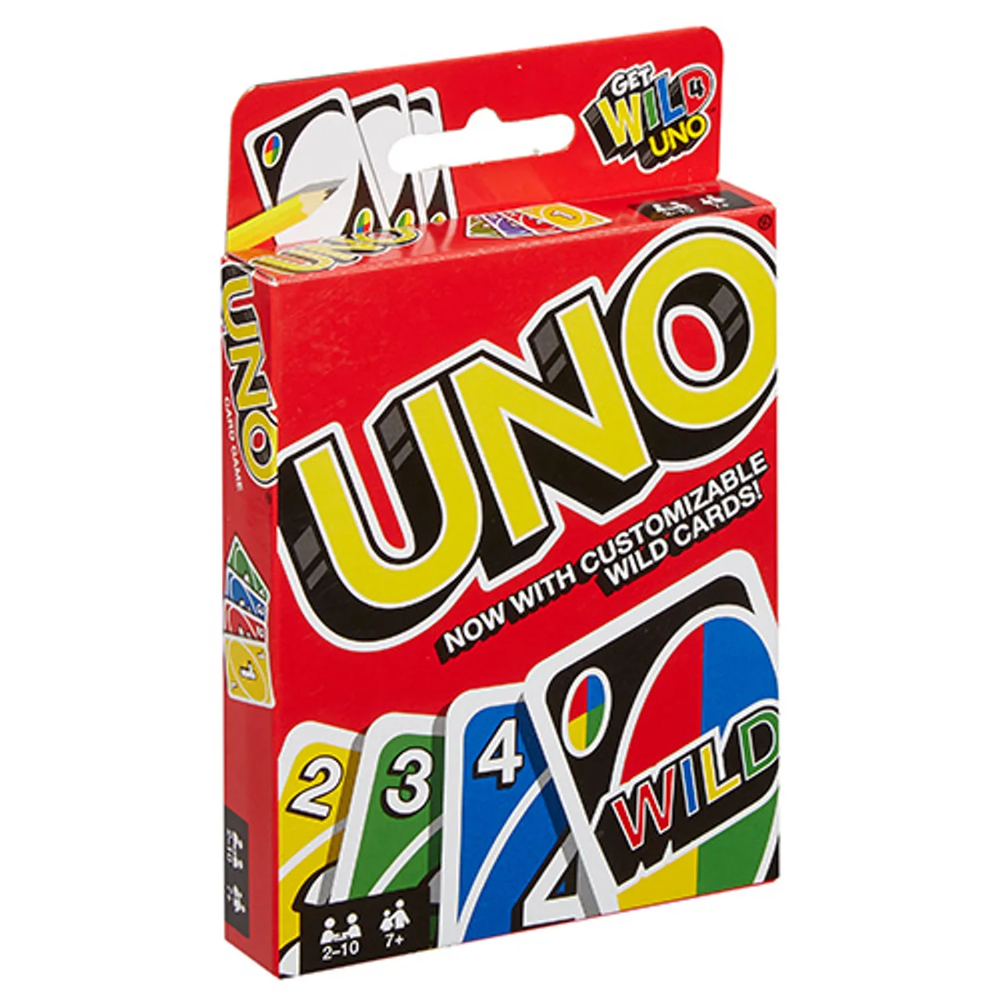
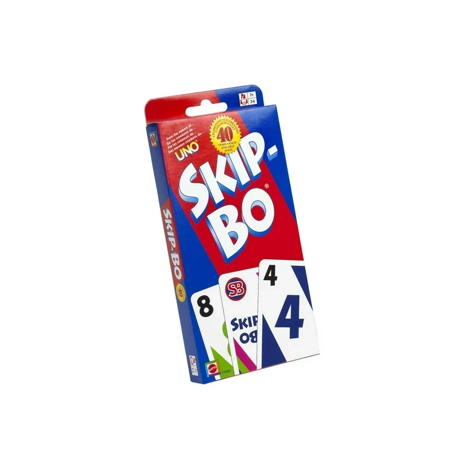
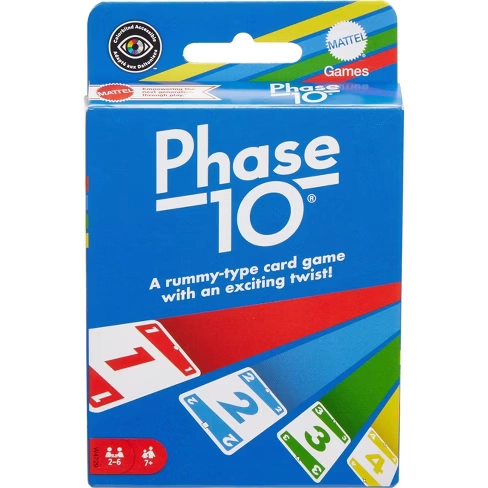
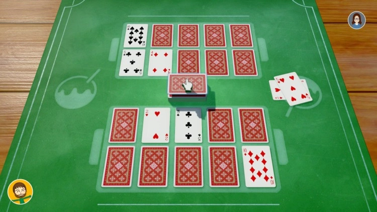
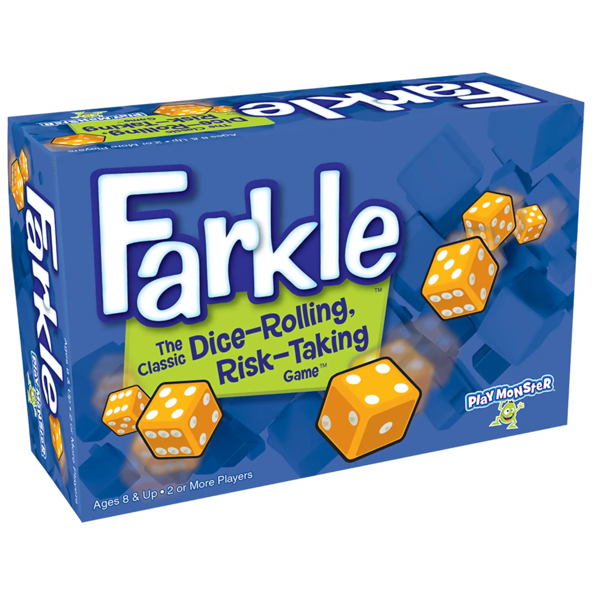
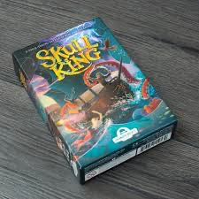
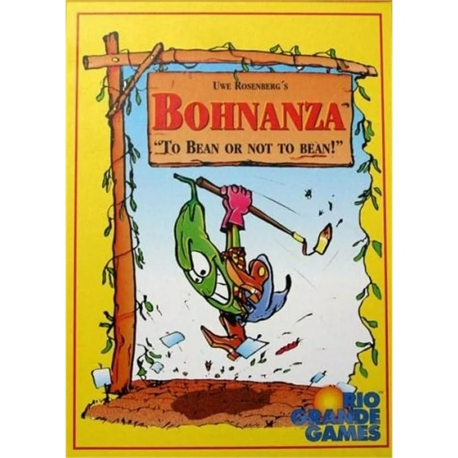
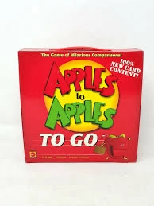
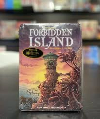

Here is a great list of games to get you started! they range from simple to more complex and there are dice, card, and board games.
Uno
One of the greatest games of all time because of its simplicity yet all of the variations that it has. Uno flip, Uno flex and Uno all wild are also great versions of the game.


Skip-Bo
Skip-Bo is a classic solitaire type game and and has a case for being my favorite game ever. Easy to learn and infinately replayable, this game will keep you entertained for hours!
Phase 10
Phase 10 is a great game that is nice and chill and is good for a long game night. There are multiple rounds with the dealer being switched each round and there are also multiple ways to play.


Takoyaki
Takoyaki is an extremely simple luck besed game. Similar to phase 10, there are multiple rounds with people advancing through them as they go. The gameplay is a bit quicker paced then phase 10 so it can be more engaging.
Bank
Bank is an incredibly fun push your luck dice game that only uses a pair of dice you will need a way to keep score for which I highly recommend the iPad app(image is app icon). Have fun with this one and dont be afraid to go for big points!

Farkle
Farkle is another fun push your luck game where you try to get the best possible scoring combinations. First to 10000 points wins! I really like the combination of luck and decicsion makaing in this one.
Skull King
This is a really fun trick taking card game in the likes of hearts. However, in this game, you predict how many tricks tyou will take before the round starts and this becomes the base of how you score the game. Very exciting and intresting game!


Bohanza
This is a highly addicting set building game where you have to barter for the cards you bwaant from other players in order to sell your crops for the most money that you can and win the game. Great geme where you naturally build alliances and enemies and a ton of fun!
Apples to Apples
Great game for large groups where a judge gets to shoose their favorite answer to a selection of cards by the other pkayers that describe a adjetive. Hilarious and wildly entertaining!


Forbidden Island
Thiis is a very very cool game where you actually work together to escape a sinking island. There are different levels that you can play the game at and it gets really intense really fast. There are also two more games in the series both just as fun!